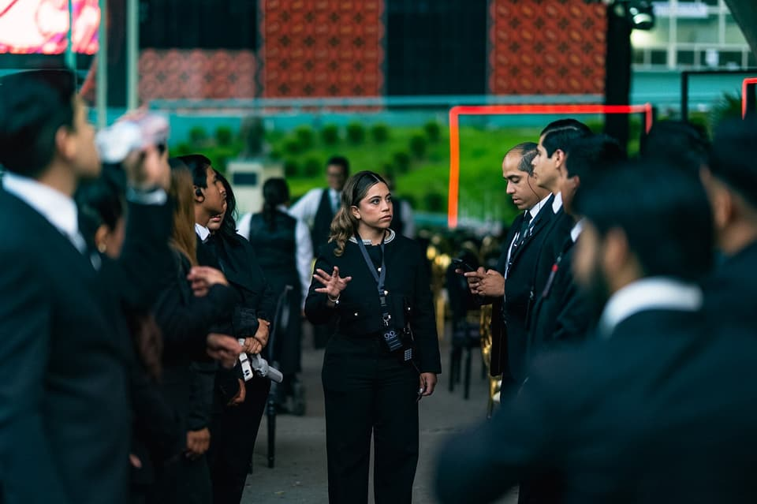
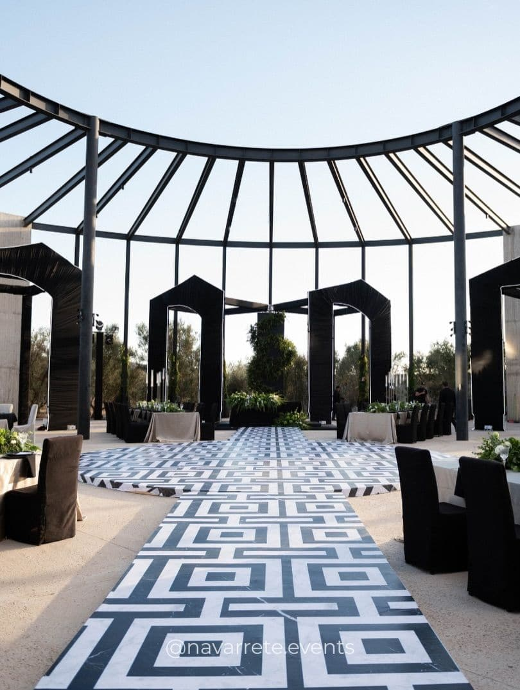
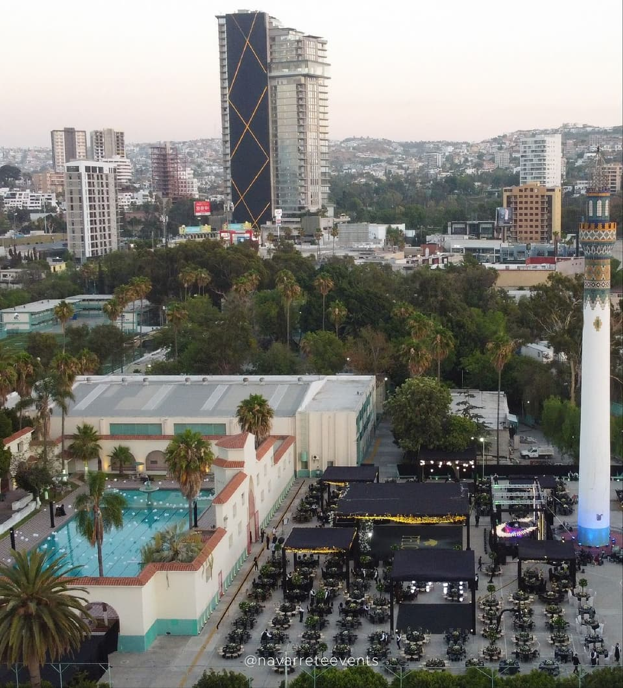

El estudio
Un estudio de diseño para celebrar
Navarrete Events es un estudio de planeación y diseño de eventos con base en Tijuana, Baja California. Creamos bodas, XV años, graduaciones y celebraciones privadas en las que cada decisión —de la luz al último cubierto— responde a una idea.
Filosofía
No buscamos que una celebración se vea lujosa. Buscamos que se sienta inevitable: como si no hubiera podido ser de otra manera.
Cada proyecto empieza con una conversación y con muchas preguntas. Nos interesa entender a quienes celebran: su historia, sus gustos, la forma en que quieren recibir a sus invitados. A partir de ahí construimos un concepto propio, nunca una plantilla.
Después viene el trabajo menos visible y más importante: planos, presupuestos, proveedores, tiempos y montaje. Es ahí donde una idea bonita se convierte en una noche que funciona.
Principios
- I
Concepto antes que decoración
Cada elemento responde a una idea central. Si algo no suma a la historia, no entra.
- II
La luz como material
Diseñamos la iluminación desde el inicio: decide cómo se ven los materiales, los colores y las personas.
- III
Escala y detalle
Instalaciones que transforman un espacio y, al mismo tiempo, una mesa que resiste la mirada de cerca.
- IV
Personal, no literal
Interpretamos gustos e historias con elegancia, sin caer en lo obvio.
- V
Ejecución impecable
Un plan claro, proveedores coordinados y un equipo presente de principio a fin.

El equipo
Un equipo presente en cada momento
El día del evento, nuestro equipo coordina proveedores, tiempos y montaje para que todo ocurra según lo planeado, con discreción y calma.
Tijuana, Baja California
Desde la frontera, con una mirada abierta
Trabajamos desde Tijuana, una ciudad de encuentros, con la versatilidad de Baja California: jardines, terrazas, salones y espacios por descubrir. Nos encanta conversar sobre celebraciones en otros destinos de la región.


Conozcámonos
La mejor forma de saber si somos el estudio indicado para su celebración es conversar.
Iniciar proyecto